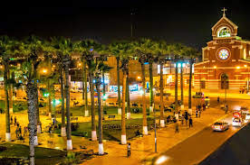

La provincia de Chincha fue creada mediante Ley del 30 de octubre de 1868 por el Presidente José Balta, con su capital la Villa de Pisco formada por los distritos de Chincha Alta, Chincha Baja, Pisco y Humay, la misma que fue elevada a la categoría de ciudad, por Ley de 19 de septiembre de 1866. Por Ley de 13 de octubre de 1900 se dividió esta provincia para formar la de Pisco; esta misma Ley trasladó la capital de la Provincia de Chincha a Chincha Alta, que tiene el título de ciudad, por ley 26 de octubre de 1868 por el presidente José Balta.

El valle de Chincha, se forma entre dos contrafuertes a una altitud de 3.419 msnm en la provincia de chincha alta de la región Ica y desciende desde esa altura hacia el océano Pacífico. Tiene un área de 3.077 km² subdivididos en 11 distritos, de los cuales 8 son costeros y tres de sierra.
La quebrada de Topará al norte, es su límite con la provincia limeña de Cañete; el cerro Huamaní, Cabeza de Toro y el cerro Puca, es el límite al sur con la provincia de Pisco y las alturas de Castrovirreyna, forman el límite este con la región Huancavelica; el límite oeste es el mar de Grau (océano Pacífico).
El valle se forma por el Río San Juan, que nace en el nevado Altar en las cumbres de Viscas a 4.513 msnm en la provincia de Castrovirreyna. Corre de norte a sur en un primer tramo y luego de este a oeste, recibiendo en épocas de sequía, aguas de las lagunas de Harmicocha, Chuncho, Turpo y Huichinga. El río San Juan antes de llamarse así adopta varios nombres en su recorrido, así: Chupamarca, Tantará, río Grande y finalmente San Juan. Antes de descargar sus aguas en el océano se divide en dos brazos; uno llamado río Chico y el otro río Matagente.
En el Distrito de San Juan de Yánac ubicada al este de la provincia de Chincha, es muy rica en ganadería y en agricultura.
Huaca la Centinela – Posiblemente sea un sitio construido por el pueblo de los Chinchas para fines administrativos y ceremoniales. Con el paso de los años la expansión incaica llegó al lugar modificando gran parte de las estructuras de Huaca Centinela. La arquitectura del sitio se caracteriza por construcciones piramidales y plataformas, entre las cuales destaca una de gran tamaño que es atribuida a un templo religioso en el que se adorara a Chinchaycamac, la principal deidad de los Chinchas.
Petroglifos de Huancor – Se trata de un conjunto de más de 1000 figuras hechas en piedra, cuya obra es atribuida al antiguo pueblo Chincha y en el que se ven reflejadas las habilidades de los mismos, en especial en el rubro de la navegación, agricultura, ganadería; además de existir evidencia, gracias a los petroglifos, de que este pueblo habría aprendido el dominio y comprensión de los quipus
El kankacho:llega desde Puno gracias a las manos de doña Julia. El sabor del carnero de Ayaviri sazonado con sal, ají y ajos es horneado junto a las papas huayro que lo acompañan. El sabor de la carne es intenso, extremadamente sabroso pero no cansa. Me faltó una copa de buen vino para tocar el cielo. Mundo de las brasas
La ocopa: es uno de mis platos favoritos desde que mi abuela paterna preparaba la salsa en el batán mientras me enseñaba a domar la piedra. La que prepara doña Benita Quicaño, dueña de la picantería La Benita, es tan pero tan buena que no pude parar de comerla. No importa que no sea en batán. El chicharrón también cumple. Mundo sur
Cuy frito: con picante de papas en El Tarwi, al estilo de Caraz. No es nada fácil cocinar cuy, su delicada carne y piel exigen un perfecto manejo y control de la temperatura del aceite. Suave y crujiente, así lo encontré en el stand de Rocío Orihuela. Para mi suerte, de pronto sacaron la pierna de jamón humeante, otro de los tesoros de Ancash y qué más les puedo decir, las fotos lo explican todo. Mundo andino.
La sopa inchicapi: es de aquellas que están calificadas como “levantamuertos”. Doña Blanca Vela de la Asociación Gastronómica Uchuyacu, la prepara con gallina (no pollo) que hierve hasta sacarle lo mejor. Luego añade maní molido, harina de maíz y otros secretitos. La sopa es ligeramente espesa, deliciosa y muy reconfortante para estos días. ¿Han probado el juane de yuca? Es el momento. Mundo amazónico
La panquita: de pescado acompañada con torrejitas de choclo es un plato típico de la culinaria chiclayana que no podía faltar en Mistura. El suave sabor ahumado que aporta la panca de choclo al pescado le da el punto justo y provocador. Las torrejitas pueden causar adicción, me hubiera gustado que las vendan solas también. Este plato lo encuentran en el stand Herencia Norteña. Mundo norteño.
El tamal: de algas marinas da de qué hablar. María Zuñiga siempre está innovando y sorprendiendo con una diversidad increíble de tamalitos. En esta edición de Mistura me ha sorprendido con dos novedades; el tamalito de algas y el de cedrón. ¿Cuál me gusta más? No podría elegir, uno es salado, el otro dulce, pero ambos están muy buenos. El de algas se sirve con una fresca zarza de cebollas. Lo que no entiendo es por qué está en el Mundo del cebiche.